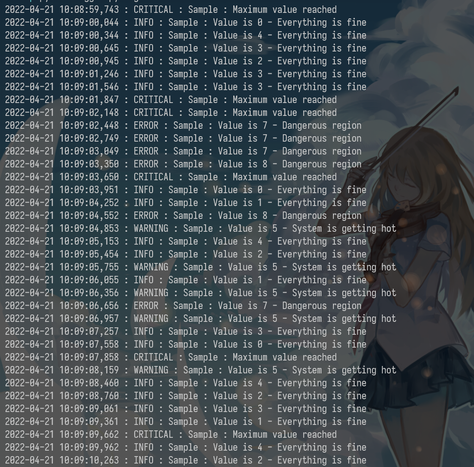
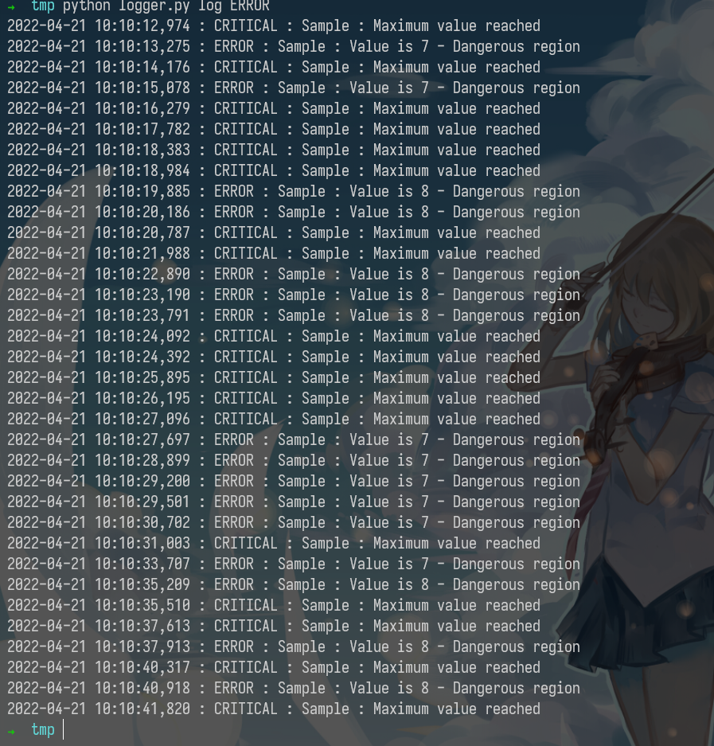
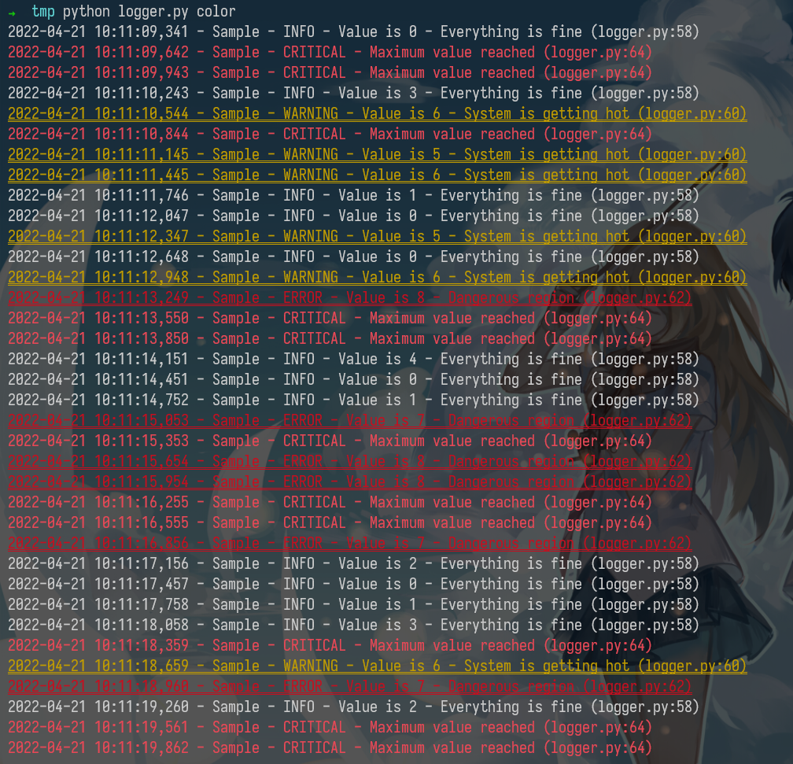
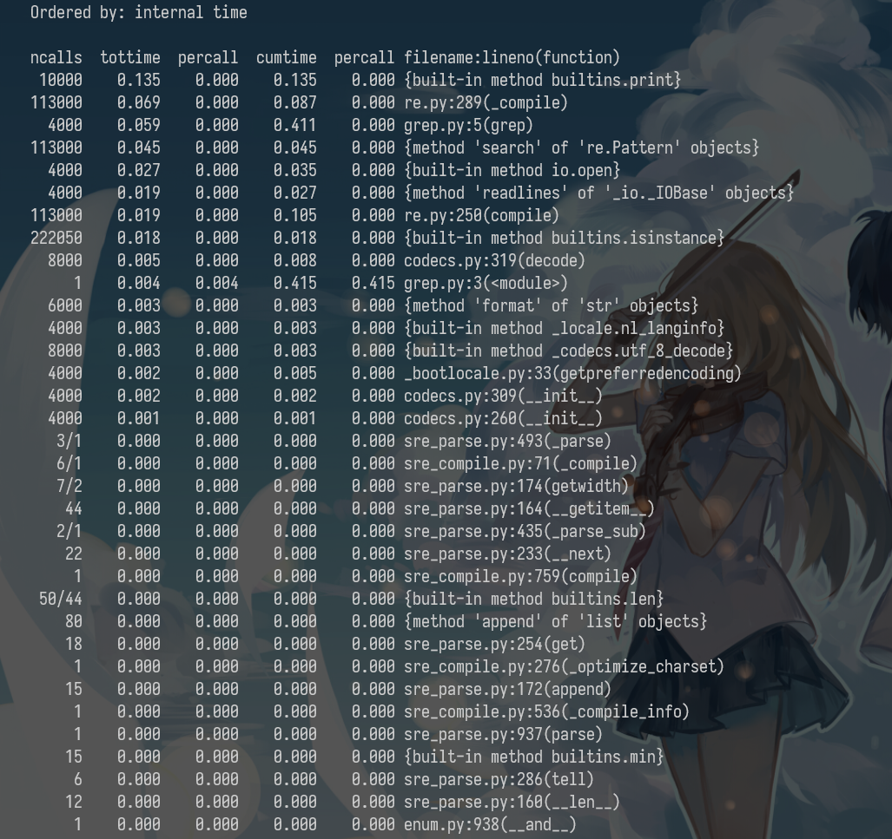

The Missing Semester in the CS
Introduction
本篇是MIT的公开课程计算机教学中消失的一学期的学习笔记第七篇。在笔记中，我将摘抄我认为是重点的语句，文中举出的例子我会在自己的电脑上操作一遍并给出其产生的结果。
本篇是Debugging and Profiling部分的学习笔记，课程地址为Debugging and Profiling.
A golden rule in programming is that code does not do what you expect it to do, but what you tell it to do.
Debugging
Printf debugging and Logging
“The most effective debugging tool is still careful thought, coupled with judiciously placed print statements” — Brian Kernighan, Unix for Beginners.
A first approach to debug a program is to add print statements around where you have detected the problem, and keep iterating until you have extracted enough information to understand what is responsible for the issue.
extract 提炼;
A second approach is to use logging in your program, instead of ad hoc print statements. Logging is better than regular print statements for several reasons:
- You can log to files, sockets or even remote servers instead of standard output.
- Logging supports severity levels (such as INFO, DEBUG, WARN, ERROR, &c), that allow you to filter the output accordingly.
- For new issues, there’s a fair chance that your logs will contain enough information to detect what is going wrong.
python logger.py

python logger.py log

python logger.py log ERROR

python logger.py color

By now you probably have realized that your terminal uses colors to make things more readable. But how does it do it? Programs like ls or grep are using ANSI escape codes, which are special sequences of characters to indicate your shell to change the color of the output. For example, executing echo -e "\e[38;2;255;0;0mThis is red\e[0m" prints the message This is red in red on your terminal, as long as it supports true color. If your terminal doesn’t support this (e.g. macOS’s Terminal.app), you can use the more universally supported escape codes for 16 color choices, for example echo -e "\e[31;1mThis is red\e[0m".
The following script shows how to print many RGB colors into your terminal (again, as long as it supports true color).
#!/usr/bin/env bash
for R in $(seq 0 20 255); do
for G in $(seq 0 20 255); do
for B in $(seq 0 20 255); do
printf "\e[38;2;${R};${G};${B}m█\e[0m";
done
done
done

Third party logs
As you start building larger software systems you will most probably run into dependencies that run as separate programs. Web servers, databases or message brokers are common examples of this kind of dependencies. When interacting with these systems it is often necessary to read their logs, since client side error messages might not suffice.
Luckily, most programs write their own logs somewhere in your system. In UNIX systems, it is commonplace for programs to write their logs under /var/log. For instance, the NGINX webserver places its logs under /var/log/nginx. More recently, systems have started using a system log, which is increasingly where all of your log messages go. Most (but not all) Linux systems use systemd, a system daemon that controls many things in your system such as which services are enabled and running. systemd places the logs under /var/log/journal in a specialized format and you can use the journalctl command to display the messages. Similarly, on macOS there is still `/var/log/system.log` but an increasing number of tools use the system log, that can be displayed with [log show](). On most UNIX systems you can also use the dmesg`` command to access the kernel log.
Debuggers
When printf debugging is not enough you should use a debugger. Debuggers are programs that let you interact with the execution of a program, allowing the following:
- Halt execution of the program when it reaches a certain line.
- Step through the program one instruction at a time.
- Inspect values of variables after the program crashed.
- Conditionally halt the execution when a given condition is met.
- And many more advanced features
Many programming languages come with some form of debugger. In Python this is the Python Debugger pdb``.
Here is a brief description of some of the commands pdb supports:
- l(ist) - Displays 11 lines around the current line or continue the previous listing.
- s(tep) - Execute the current line, stop at the first possible occasion.
- n(ext) - Continue execution until the next line in the current function is reached or it returns.
- b(reak) - Set a breakpoint (depending on the argument provided).
- p(rint) - Evaluate the expression in the current context and print its value. There’s also pp to display using pprint`` instead.
- r(eturn) - Continue execution until the current function returns.
- q(uit) - Quit the debugger.
Note that since Python is an interpreted language we can use the pdb shell to execute commands and to execute instructions. ipdb is an improved `pdb` that uses the [IPython]() REPL enabling tab completion, syntax highlighting, better tracebacks, and better introspection while retaining the same interface as the pdb module.
REPL read-eval-print loop 读取-求值-输出循环，即为交互式编程环境
For more low level programming you will probably want to look into gdb (and its quality of life modification [pwndbg]()) and lldb``. They are optimized for C-like language debugging but will let you probe pretty much any process and get its current machine state: registers, stack, program counter, &c.
Specialized Tools
Even if what you are trying to debug is a black box binary there are tools that can help you with that. Whenever programs need to perform actions that only the kernel can, they use System Calls. There are commands that let you trace the syscalls your program makes. In Linux there’s strace and macOS and BSD have [dtrace](). dtrace can be tricky to use because it uses its own D language, but there is a wrapper called dtruss`` that provides an interface more similar to strace (more details here).
Under some circumstances, you may need to look at the network packets to figure out the issue in your program. Tools like tcpdump`` and Wireshark are network packet analyzers that let you read the contents of network packets and filter them based on different criteria.
For web development, the Chrome/Firefox developer tools are quite handy. They feature a large number of tools, including:
- Source code - Inspect the HTML/CSS/JS source code of any website.
- Live HTML, CSS, JS modification - Change the website content, styles and behavior to test (you can see for yourself that website screenshots are not valid proofs).
- Javascript shell - Execute commands in the JS REPL.
- Network - Analyze the requests timeline.
- Storage - Look into the Cookies and local application storage.
Static Analysis
For some issues you do not need to run any code. For example, just by carefully looking at a piece of code you could realize that your loop variable is shadowing an already existing variable or function name; or that a program reads a variable before defining it. Here is where static analysis tools come into play. Static analysis programs take source code as input and analyze it using coding rules to reason about its correctness.
In the shell tools lecture we covered shellcheck``, which is a similar tool for shell scripts.
Most editors and IDEs support displaying the output of these tools within the editor itself, highlighting the locations of warnings and errors. This is often called code linting and it can also be used to display other types of issues such as stylistic violations or insecure constructs.
In vim, the plugins ale or [syntastic]() will let you do that. For Python, pylint and [pep8]() are examples of stylistic linters and bandit`` is a tool designed to find common security issues. For other languages people have compiled comprehensive lists of useful static analysis tools, such as Awesome Static Analysis (you may want to take a look at the Writing section) and for linters there is Awesome Linters.
A complementary tool to stylistic linting are code formatters such as black for Python, `gofmt` for Go, `rustfmt` for Rust or [prettier]() for JavaScript, HTML and CSS. These tools autoformat your code so that it’s consistent with common stylistic patterns for the given programming language. Although you might be unwilling to give stylistic control about your code, standardizing code format will help other people read your code and will make you better at reading other people’s (stylistically standardized) code.
Profiling
Even if your code functionally behaves as you would expect, that might not be good enough if it takes all your CPU or memory in the process. Algorithms classes often teach big O notation but not how to find hot spots in your programs. Since premature optimization is the root of all evil, you should learn about profilers and monitoring tools. They will help you understand which parts of your program are taking most of the time and/or resources so you can focus on optimizing those parts.
Premature optimization is the root of all evil.
过早的优化是所有罪恶的根源。
Timing
Similarly to the debugging case, in many scenarios it can be enough to just print the time it took your code between two points. Here is an example in Python using the time`` module.
import time, random
n = random.randint(1, 10) * 100
# Get current time
start = time.time()
# Do some work
print("Sleeping for {} ms".format(n))
time.sleep(n/1000)
# Compute time between start and now
print(time.time() - start)
# Output
# Sleeping for 500 ms
# 0.5713930130004883
However, wall clock time can be misleading since your computer might be running other processes at the same time or waiting for events to happen. It is common for tools to make a distinction between Real, User and Sys time. In general, User + Sys tells you how much time your process actually spent in the CPU (more detailed explanation here).
- Real - Wall clock elapsed time from start to finish of the program, including the time taken by other processes and time taken while blocked (e.g. waiting for I/O or network)
- User - Amount of time spent in the CPU running user code
- Sys - Amount of time spent in the CPU running kernel code
➜ tmp time curl https://missing.csail.mit.edu &> /dev/null
curl https://missing.csail.mit.edu &> /dev/null 0.03s user 0.00s system 3% cpu 0.775 total
Profiling
CPU
Most of the time when people refer to profilers they actually mean CPU profilers, which are the most common. There are two main types of CPU profilers: tracing and sampling profilers. Tracing profilers keep a record of every function call your program makes whereas sampling profilers probe your program periodically (commonly every millisecond) and record the program’s stack. They use these records to present aggregate statistics of what your program spent the most time doing. Here is a good intro article if you want more detail on this topic.
Most programming languages have some sort of command line profiler that you can use to analyze your code. They often integrate with full fledged IDEs but for this lecture we are going to focus on the command line tools themselves.
In Python we can use the cProfile module to profile time per function call. Here is a simple example that implements a rudimentary grep in Python:
#!/usr/bin/env python
import sys, re
def grep(pattern, file):
with open(file, 'r') as f:
print(file)
for i, line in enumerate(f.readlines()):
pattern = re.compile(pattern)
match = pattern.search(line)
if match is not None:
print("{}: {}".format(i, line), end="")
if __name__ == '__main__':
times = int(sys.argv[1])
pattern = sys.argv[2]
for i in range(times):
for file in sys.argv[3:]:
grep(pattern, file)
We can profile this code using the following command. Analyzing the output we can see that IO is taking most of the time and that compiling the regex takes a fair amount of time as well. Since the regex only needs to be compiled once, we can factor it out of the for.
python -m cProfile -s tottime grep.py 1000 '^(import|\s*def)[^,]*$' *.py

A caveat of Python’s cProfile profiler (and many profilers for that matter) is that they display time per function call. That can become unintuitive really fast, especially if you are using third party libraries in your code since internal function calls are also accounted for. A more intuitive way of displaying profiling information is to include the time taken per line of code, which is what line profilers do.
caveat 警告; unintuitive 不直观的;
For instance, the following piece of Python code performs a request to the class website and parses the response to get all URLs in the page:
#!/usr/bin/env python
import requests
from bs4 import BeautifulSoup
# This is a decorator that tells line_profiler
# that we want to analyze this function
@profile
def get_urls():
response = requests.get('https://missing.csail.mit.edu')
s = BeautifulSoup(response.content, 'lxml')
urls = []
for url in s.find_all('a'):
urls.append(url['href'])
if __name__ == '__main__':
get_urls()
If we used Python’s cProfile profiler we’d get over 2500 lines of output, and even with sorting it’d be hard to understand where the time is being spent. A quick run with line_profiler`` shows the time taken per line:
$ kernprof -l -v a.py
Wrote profile results to urls.py.lprof
Timer unit: 1e-06 s
Total time: 0.636188 s
File: a.py
Function: get_urls at line 5
Line # Hits Time Per Hit % Time Line Contents
==============================================================
5 @profile
6 def get_urls():
7 1 613909.0 613909.0 96.5 response = requests.get('https://missing.csail.mit.edu')
8 1 21559.0 21559.0 3.4 s = BeautifulSoup(response.content, 'lxml')
9 1 2.0 2.0 0.0 urls = []
10 25 685.0 27.4 0.1 for url in s.find_all('a'):
11 24 33.0 1.4 0.0 urls.append(url['href'])
Memory
In languages like C or C++ memory leaks can cause your program to never release memory that it doesn’t need anymore. To help in the process of memory debugging you can use tools like Valgrind that will help you identify memory leaks.
In garbage collected languages like Python it is still useful to use a memory profiler because as long as you have pointers to objects in memory they won’t be garbage collected. Here’s an example program and its associated output when running it with memory-profiler (note the decorator like in line-profiler).
@profile
def my_func():
a = [1] * (10 ** 6)
b = [2] * (2 * 10 ** 7)
del b
return a
if __name__ == '__main__':
my_func()

Event Profiling
As it was the case for strace for debugging, you might want to ignore the specifics of the code that you are running and treat it like a black box when profiling. The perf`` command abstracts CPU differences away and does not report time or memory, but instead it reports system events related to your programs. For example, perf can easily report poor cache locality, high amounts of page faults or livelocks. Here is an overview of the command:
perf list- List the events that can be traced with perfperf stat COMMAND ARG1 ARG2- Gets counts of different events related a process or commandperf record COMMAND ARG1 ARG2- Records the run of a command and saves the statistical data into a file calledperf.dataperf report- Formats and prints the data collected inperf.data
Visualization
Profiler output for real world programs will contain large amounts of information because of the inherent complexity of software projects. Humans are visual creatures and are quite terrible at reading large amounts of numbers and making sense of them. Thus there are many tools for displaying profiler’s output in an easier to parse way.
parse 解析;
One common way to display CPU profiling information for sampling profilers is to use a Flame Graph, which will display a hierarchy of function calls across the Y axis and time taken proportional to the X axis. They are also interactive, letting you zoom into specific parts of the program and get their stack traces.
Call graphs or control flow graphs display the relationships between subroutines within a program by including functions as nodes and functions calls between them as directed edges. When coupled with profiling information such as the number of calls and time taken, call graphs can be quite useful for interpreting the flow of a program. In Python you can use the pycallgraph`` library to generate them.
subroutine 子程序;
Resource Monitoring
Sometimes, the first step towards analyzing the performance of your program is to understand what its actual resource consumption is. Programs often run slowly when they are resource constrained, e.g. without enough memory or on a slow network connection. There are a myriad of command line tools for probing and displaying different system resources like CPU usage, memory usage, network, disk usage and so on.
constrain 约束; myriad 无数;
- General Monitoring - Probably the most popular is htop
, which is an improved version of [top]().htoppresents various statistics for the currently running processes on the system.htophas a myriad of options and keybinds, some useful ones are:<F6>to sort processes,tto show tree hierarchy andhto toggle threads. See also glancesfor similar implementation with a great UI. For getting aggregate measures across all processes, [dstat]()is another nifty tool that computes real-time resource metrics for lots of different subsystems like I/O, networking, CPU utilization, context switches, &c. - I/O operations - iotop`` displays live I/O usage information and is handy to check if a process is doing heavy I/O disk operations
- Disk Usage - df
displays metrics per partitions and [du]()displays disk usage per file for the current directory. In these tools the-hflag tells the program to print with human readable format. A more interactive version ofduis ncdu`` which lets you navigate folders and delete files and folders as you navigate.
metrics 指标; partitions 分区;
- Memory Usage - free`` displays the total amount of free and used memory in the system. Memory is also displayed in tools like
htop. - Open Files - lsof`` lists file information about files opened by processes. It can be quite useful for checking which process has opened a specific file.
弹出U盘时有大用（大雾
- Network Connections and Config - ss
lets you monitor incoming and outgoing network packets statistics as well as interface statistics. A common use case of `ss` is figuring out what process is using a given port in a machine. For displaying routing, network devices and interfaces you can use [ip](). Note thatnetstatandifconfighave been deprecated in favor of the former tools respectively. - Network Usage - nethogs
and [iftop]()are good interactive CLI tools for monitoring network usage.
有一说一，这些都是命令行下的工具，至少对于我来说，使用起来还是或多或少不是十分的方便，相比之下，我更倾向于使用各种成熟的IDE。
If you want to test these tools you can also artificially impose loads on the machine using the stress`` command.
Specialized tools
Sometimes, black box benchmarking is all you need to determine what software to use. Tools like hyperfine`` let you quickly benchmark command line programs. For instance, in the shell tools and scripting lecture we recommended fd over find. We can use hyperfine to compare them in tasks we run often.
$ hyperfine --warmup 3 'fd -e jpg' 'find . -iname "*.jpg"'
Benchmark #1: fd -e jpg
Time (mean ± σ): 51.4 ms ± 2.9 ms [User: 121.0 ms, System: 160.5 ms]
Range (min … max): 44.2 ms … 60.1 ms 56 runs
Benchmark #2: find . -iname "*.jpg"
Time (mean ± σ): 1.126 s ± 0.101 s [User: 141.1 ms, System: 956.1 ms]
Range (min … max): 0.975 s … 1.287 s 10 runs
Summary
'fd -e jpg' ran
21.89 ± 2.33 times faster than 'find . -iname "*.jpg"'
As it was the case for debugging, browsers also come with a fantastic set of tools for profiling webpage loading, letting you figure out where time is being spent (loading, rendering, scripting, &c). More info for Firefox and Chrome.
Exercises
由于是在命令行界面中，我不是太想做。